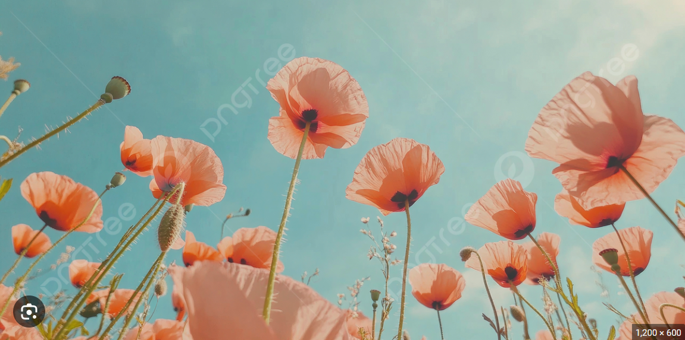
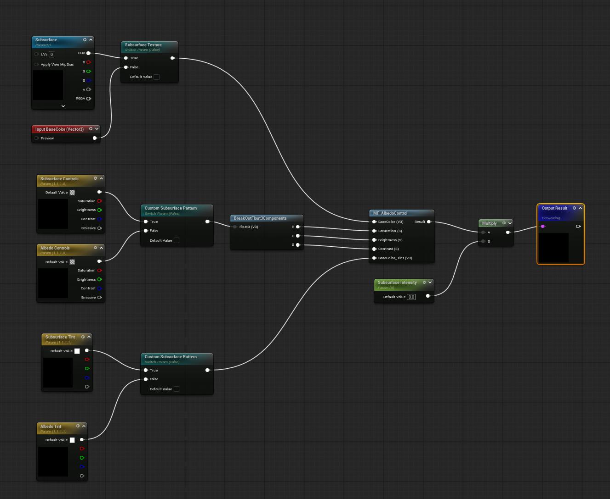
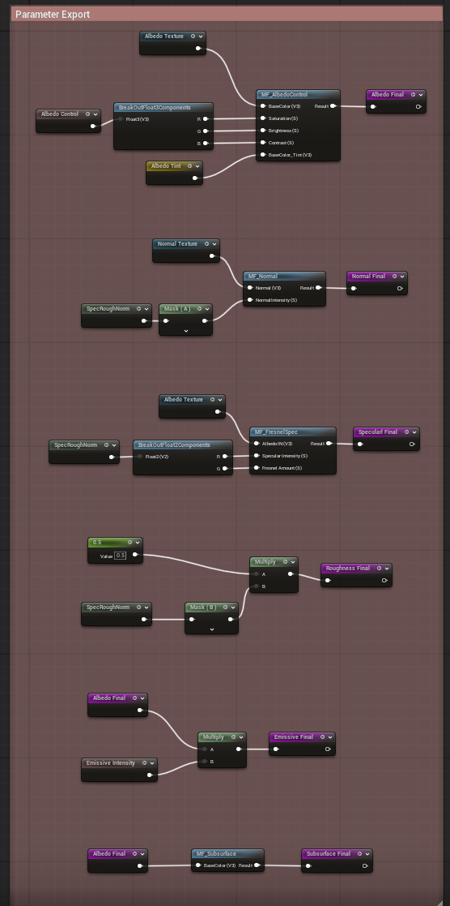

第 7 週
這是從 VAT 到 Unreal 的流程文件
已完成：
待辦事項：
-
把 Itim 有動畫的樹從 Houdini 匯入 Unreal
-
製作鏡頭 3 的佈局
-
研究葡萄風信子、葉子與莖的 shader
這週我們定義了鏡頭。第一個鏡頭是葉子從土裡破土而出，土壤要用 Gaussian Splatting。鏡頭 3：低角度看葡萄風信子綻放。鏡頭 4：綻放的動畫轉場到用 Gaussian Splatting 做的大場景。
這是我們這週探索的佈局，下面是它的參考。

我也研究了如何在 Unreal Engine 中使用 Material Functions，讓我們能在主材質中定義參數，再於材質實例中覆寫貼圖或調整數值。

這是 MF_AlbedoControl Function 的內部：這個節點圖設計成可控的顏色流程，不需更動原始貼圖就能調整飽和度、色調、亮度與對比。

這是 MF_FresnelSpec Function 的內部：這個節點圖結合高光強度與菲涅耳效果，做出可控、隨視角變化的表面高光。

這是 MF_Normal Function 的內部：透過縮放紅色與綠色通道控制法線強度，同時保留藍色通道以維持正確的法線方向。

這是 MF_Subsurface Function 的內部：這個節點圖結合貼圖選擇、顏色控制、色調變化與強度調整，建立彈性的次表面流程。

這是 MF_Plant Set：這個節點圖是模組化的主材質，分成三個階段：參數設定、材質處理與最終輸出。albedo、法線、高光、粗糙度、自發光與次表面等可調控制項，各自透過專屬的 function 獨立處理，再組合成最終的材質輸出。這個結構讓 shader 在 Unreal Engine 中算植物時可重複使用又有彈性。



這展示了我如何建立材質實例並調整參數，把主材質套用到葉子上。
-
把葡萄風信子轉成粒子
-
用 PCG 製作鏡頭 3 的佈局